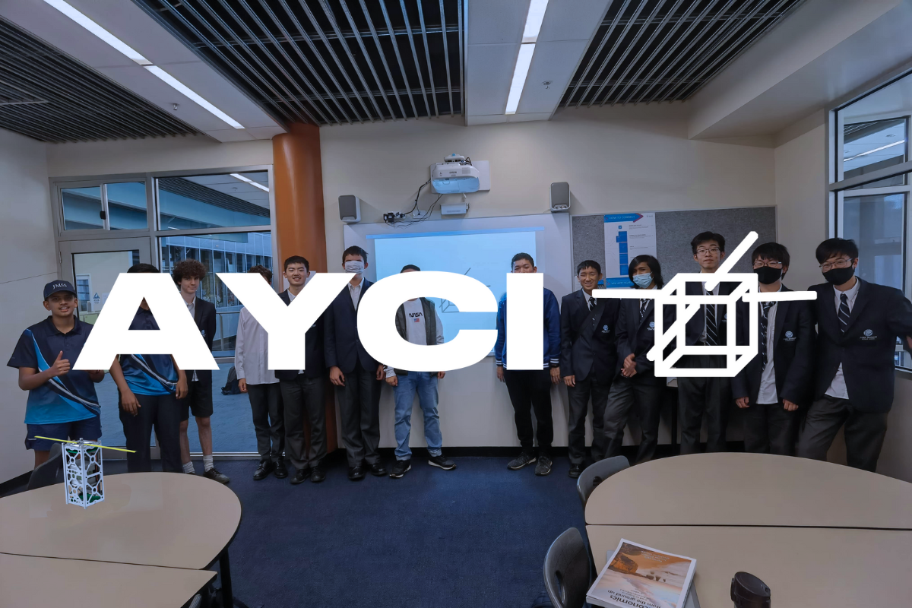
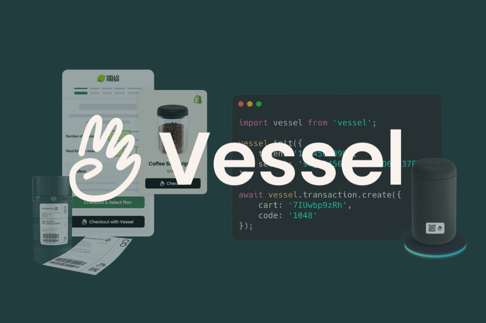
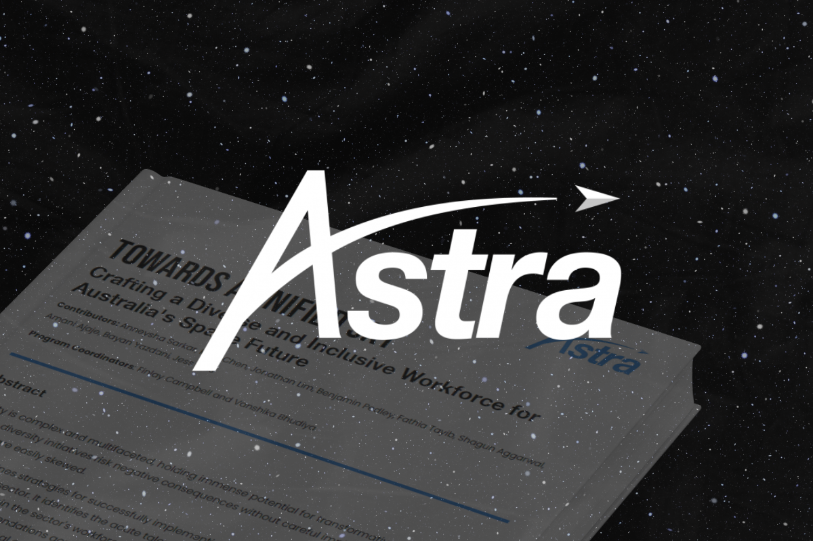

I'm a student at the Australian National University and co-founder of the Australasian Youth Cubesat Initiative, creating opportunities for the next generation of space innovators. I've led key initiatives on diversity in Australia's space workforce and have been involved with various non-profits and startups.
Got a cool idea? Let's connect!
Projects

Australasian Youth Cubesat Initiative
The Australasian Youth Cubesat Initiative (AYCI) is a registered charity empowering the next generation through educational outreach, advocacy, and satellite development. AYCI envisions a future where space is accessible to all, driving humanity forward as a multi-planetary society.

Vessel
Vessel was an integrated platform designed for returnable systems, supporting everything from in-person returns to closed-loop e-commerce. The platform enabled efficient monetization, NFC tag management, fraud prevention, and integration with third-party services.

Whitepaper: Astra Program 23/24
As Program Coordinator for the Astra Program, I led a team to publish the whitepaper ‘Towards a Unified Sky: Crafting a Diverse and Inclusive Workforce for Australia's Space Future.’ The paper outlines a roadmap for diversity and inclusion in the space sector.